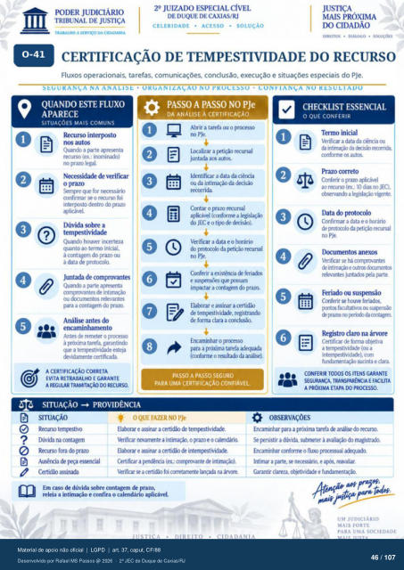

Transcrição automática em português, ainda não revisada. Confira grafia, prazos e termos jurídicos na imagem e no PDF antes de utilizar.
29 JUIZADO ESPECIAL CÍVEL
DE DUQUE DE CAXIAS,'RJ
• SOLUÇÃO
• ACESSO
A DA CIDADANIA
SOcVÇuS
CERTIFICAÇÃO DE TEMPESTIVIDADE DO RECURSO
Fluxos operacionais. tarefas, comunicações. conclusão, execução e situações especiais do PJe.
SEOUKANÇA NA ANALISE • OKOANIZ.AÇAO NO PROCESSO • CONFIANÇA NO RESULIADO
QUANDO ESTE FLUXO
APARECE
SITUAÇÕES MAIS COMUNS
Recurso interposto nos autos
Quando a parte apresenta recurso (ex.: inominado)
no prazo legal Necessidade de verificar
o prazo que for
confirmar se 0 foi intemsto dentro do prazo
sobre a temFstividade
quanto ao termo inicial. à contagem prazo ou
à data de protcxolo. Juntada de comprovantes
Quando a parte comprovantes de
ou relevantes para a contagem cb prazo
antes do Antes de remeter o prcxesso
à próxima tarefa. garantindo qtr a esteja
certificada.
A CERTIFICAÇÃO CORRETA
EVITA RETRABALHO E GARANTE
A REGULAR TRAMITAÇÃO RECURSO
SITUAÇÃO -+ PROVIDÊNCIA
PASSO A PASSO NO PJe
DA ANÁLISE À CERTIFICACÀO
Abrir a tarefa ou o prcresso no PJe.
uralizar a ptiçào recursal juntada aos autos.
Identificar a data da ciência ou da intim*) da decisão
Contar o prazo recursal aplicável (conforrne a legislaçü)
do JEE e o tip de Verificar a data e o horário
do vrotcxolo da Ftiçáo no PJe
Conferir a existência de feriados e qtp lxxsam
impactar a cmtagem prazo. Elbrar e assinar a certidão
de temvrstividade, registrando de forma clara a conclusão.
Encaminhar o pr«esso para a próxima tarefa adequada
(conf«nr o resultado da análise).
PASSO A PASSO SEGURO
PARA UMA CERTIFICAÇÃO CONFIÁVEL.
CHECKLIST ESSENCIAL
O QUE CONFERIR
Termo inicial Verificar a data da cincia
da conforme os autos.
Prazo correto Conferir o prazo aplkável
ao (ex.: 10 dias no JEC). observando a legislação vigente
Ikta do protocolo Confirmar a data e 0 horám
de Çrottxolo da Ftiçáo recursal PJe.
Docurnentos anexos Verificar se há cornvrovantes
e dcxurnent(X relevantes juntados Fla g»rte.
Feriado ou suspensão Conferir houve feriuios,
pntcx facultativos çraz« ccnter
Registro claro na árvore Certificar de forma objetiva
a tempstividade (Ml a intemrvstividxie), com
sucinta e clara
CONFERIR OS ITENS GARANTE
SEGURANÇA. TRANSPARÊNCIA E FACILITA
A PRÓXIMA ETAPA DO
OBSERVAÇÕES
SITUAÇÃO
Recurso temFstivo na
Recurs) fcra prazo Ausêrria Fça
Certiú) assin± OQUE FAZER NO Ple
Elabrar e assinar a certi& de VMficar rmanxte a intim*). o prazo e o cakruiárb.
Elatxxar e assinar a certiü) de intemFstividade. Certificar a (ex.: comprovante de
Verificu a certi&) fd corretamerte na árv«e. Em caso dúvida sobre contagem prazo,
releia a intimação e confira 0 calendário aplicável. Encaminhar para a próxirna tarefa análi* do recurso.
Se Frsistir a dúvida. submeter à avali$) do magistrada Encaminhar o fluxo prxessual ackluad(i
Intirnar a parte. e reavaliar. Garantir clareza, cbjetivid± e
UM JUDICIÁRIO
MAIS FORTE
PARA UMA SOCIEDADE
Ver também o infográfico original (página 46)
